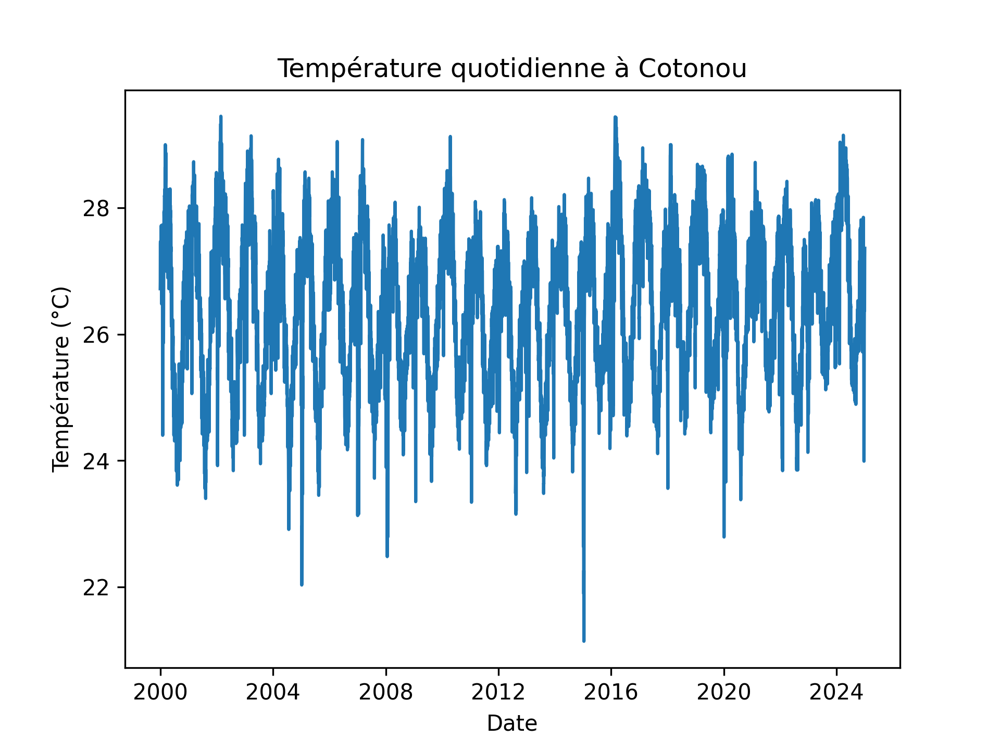
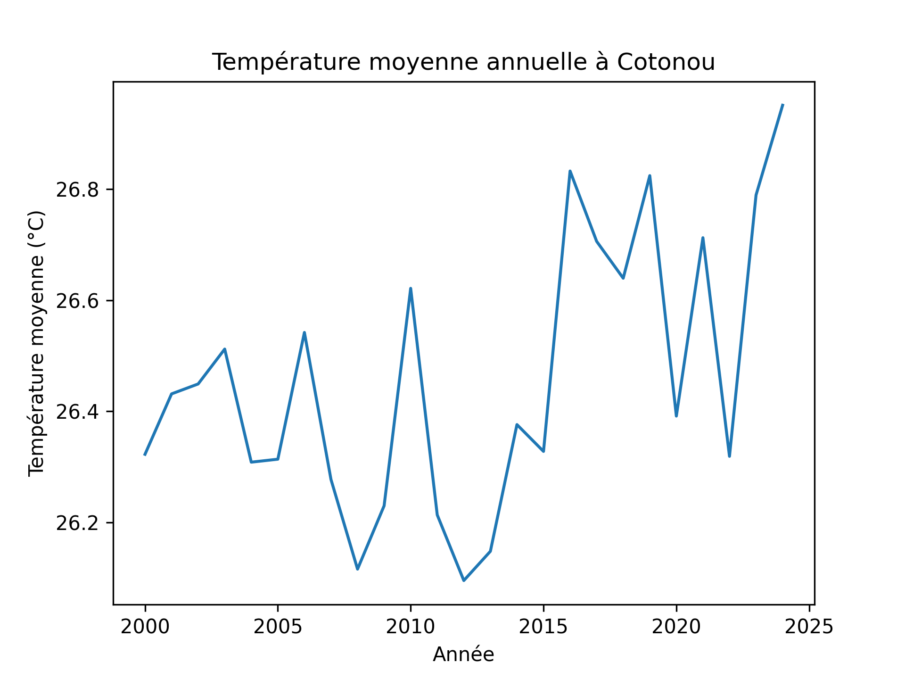
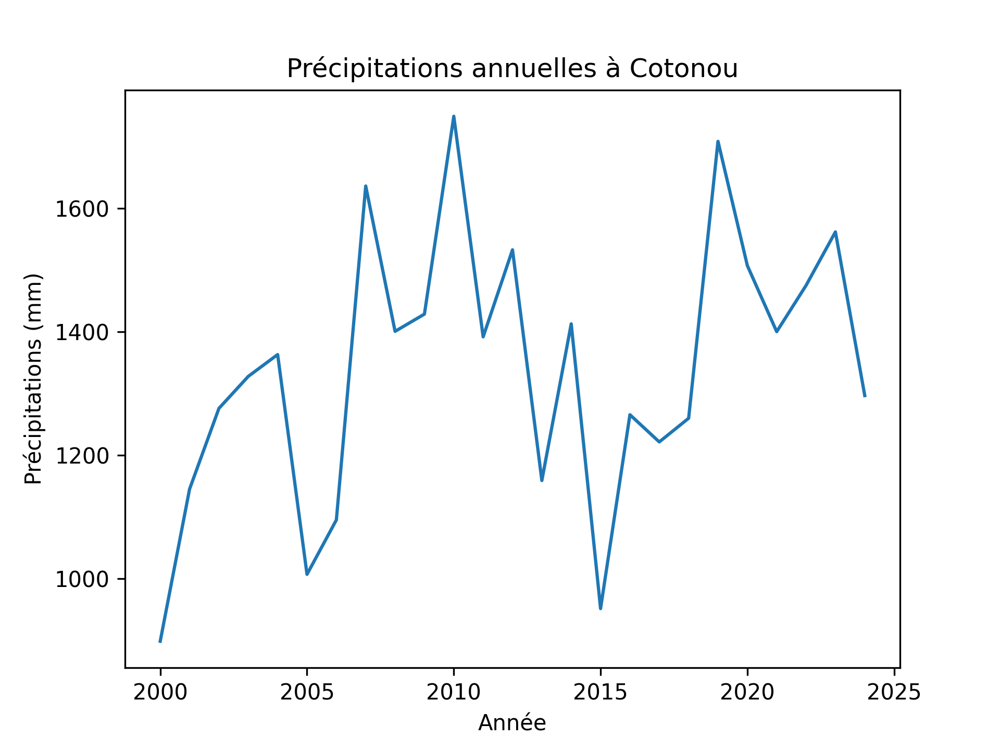
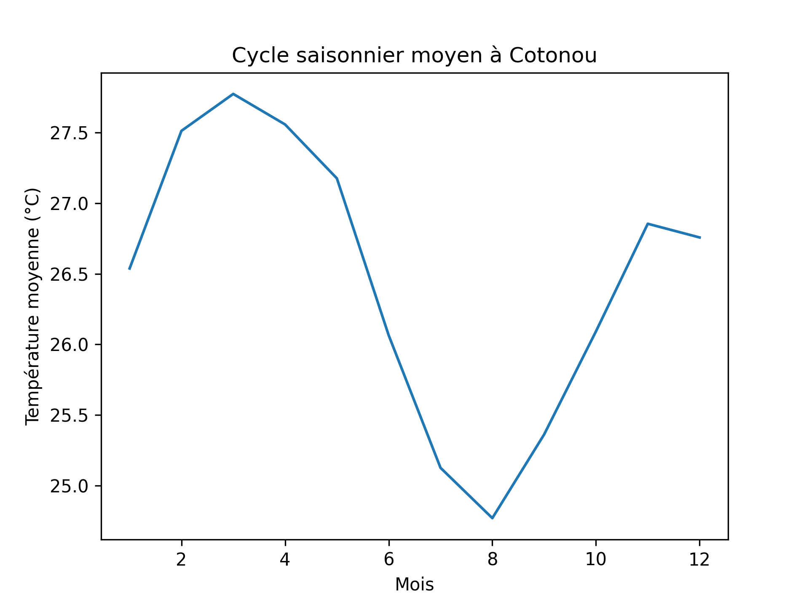

Étude des températures et précipitations (2000-2024)
Ce projet présente une analyse exploratoire du climat de la ville de Cotonou au Bénin entre 2000 et 2024. L'objectif est d'étudier les variations de la température et des précipitations afin de mieux comprendre les tendances climatiques observées sur cette période.
Les données climatiques utilisées proviennent de la base de données NASA POWER (Prediction Of Worldwide Energy Resources). Cette base fournit des observations météorologiques globales issues de satellites et de modèles atmosphériques.
Variables utilisées dans l'analyse :
Les données ont été téléchargées depuis la plateforme NASA POWER au format CSV pour la période 2000-2024.
L'analyse a été réalisée avec le langage de programmation Python en utilisant les bibliothèques suivantes :
Les principales étapes de l'analyse sont :
Ce graphique montre l'évolution de la température moyenne quotidienne à Cotonou entre 2000 et 2024. On observe une variabilité importante liée aux cycles saisonniers.

La température moyenne annuelle permet d'observer les tendances climatiques sur le long terme et de détecter d'éventuelles évolutions du climat local.

Les précipitations annuelles donnent une indication de la variabilité du régime pluviométrique à Cotonou. Ces variations peuvent être liées à différents phénomènes climatiques régionaux.

Ce graphique représente le cycle saisonnier moyen des températures sur l'année. Il permet de visualiser les périodes les plus chaudes et les plus fraîches dans la région de Cotonou.

Cette analyse met en évidence la forte variabilité saisonnière du climat à Cotonou. Les températures restent relativement élevées tout au long de l'année, tandis que les précipitations présentent une distribution saisonnière caractéristique des climats tropicaux de l'Afrique de l'Ouest.
Ce projet constitue une première exploration des données climatiques et pourrait être approfondi par des analyses statistiques plus avancées ou par l'étude d'autres variables atmosphériques.